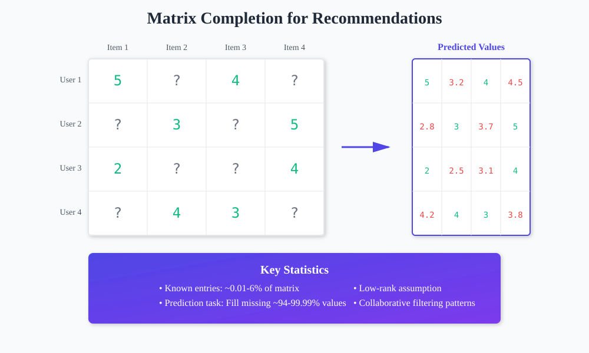
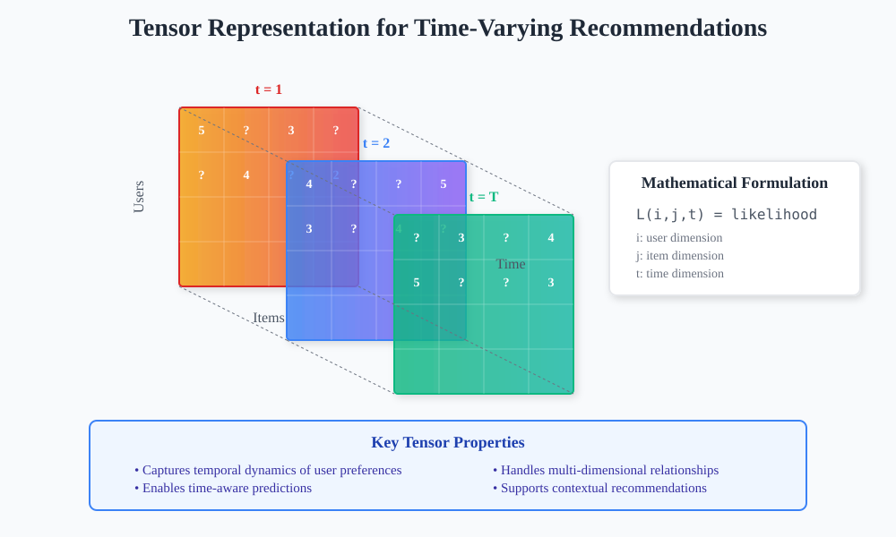
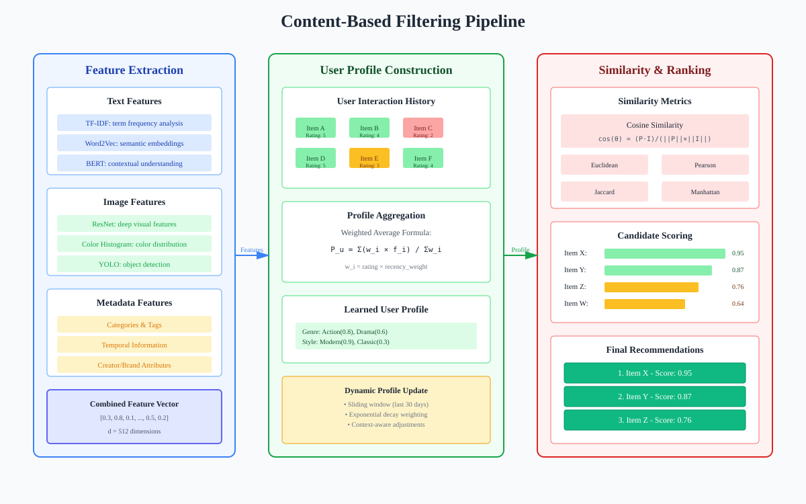
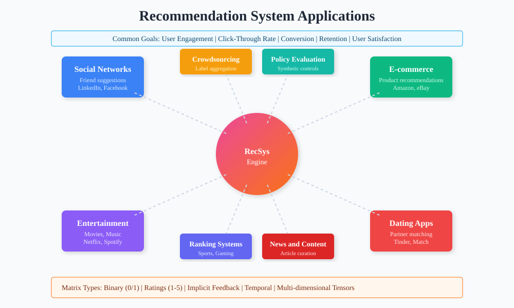

Recommendation Systems: Theory and Implementation
📚 Quick Navigation
- Introduction & Background
- Problem Statement
- Matrix Completion Fundamentals
- Simple Solutions
- Content-Based Filtering
- Real-World Applications
- Datasets & Experiments
- Advanced Topics
- Implementation Guide
- References & Further Reading
Introduction & Background
Recommendation systems are automated systems that provide personalized suggestions to users based on patterns discovered in their historical behavior and preferences. These systems have become integral to modern digital experiences, from entertainment platforms to e-commerce sites.
Why Recommendation Systems Matter:
- Information Overload: Every hour, approximately 30,000 hours of video content is uploaded to YouTube alone - requiring 3,000 lifetimes to watch everything
- Choice Paralysis: Users face too many options with most being irrelevant or unknown to them
- Personalization Need: Only a small fraction of available content is potentially relevant to any individual user
- Business Value: Effective recommendations drive engagement, satisfaction, and revenue
Core Applications:
- Entertainment Platforms: Netflix, YouTube, Spotify recommendations
- E-commerce: Amazon product suggestions, personalized shopping experiences
- Social Networks: LinkedIn connections, Facebook friend suggestions
- Dating Apps: Tinder, Match.com partner recommendations
- Content Discovery: News feeds, article recommendations

Problem Statement
The fundamental challenge of recommendation systems is to predict the likelihood of a match between users and items based on incomplete information. This can be formalized as a matrix completion problem.
Mathematical Formulation:
Given: - N users - M providers or items - User i and item j
Find the likelihood:
L_ij = ?
Where L_ij represents the likelihood of user i matching with item j.
Matrix Representation:
The problem can be visualized as completing a sparse matrix where:
- Rows: Represent users
- Columns: Represent items/providers
- Values: Represent interactions (ratings, clicks, purchases)
- Unknown entries: Marked with * or ?
Real-World Interpretation:
- Movies: What is the likelihood that user i would enjoy movie j?
- Restaurants: What is the likelihood that user i would dine at restaurant j?
- Products: What is the likelihood that user i would purchase product j?

Matrix Completion Fundamentals
Matrix completion is the core mathematical framework underlying most recommendation systems. The challenge is extreme sparsity - typically only 0.01-6% of entries are known.
The Sparsity Challenge:
Consider the Yelp dataset: - Users: ~2M - Businesses: ~200k - Total possible interactions: ~0.4T - Known reviews: ~8M - Fraction known: 2 × 10^-5 (0.002%)
Key Concepts:
- Observed Entries: Known user-item interactions
- Missing Entries: Unknown interactions to predict
- Low-Rank Assumption: User preferences can be explained by a small number of latent factors
- Collaborative Filtering: Using patterns from similar users/items
Time-Varying Tensors:
Real-world recommendation problems extend beyond simple matrices:
L_ijk(t) = likelihood at time t for user i, item j, context k
This accounts for: - Temporal Dynamics: Preferences change over time - Contextual Information: Location, device, mood - Multi-dimensional Relationships: Complex interactions between multiple factors
Simple Solutions
Averaging Approach
The simplest recommendation approach assumes all users (or all items) are identical and uses statistical averaging.
Basic Averaging:
L_ij = average of all observed entries in column j
Limitations:
- Small Sample Problem: A restaurant with one 5-star review isn't necessarily better than one with 500 4-star reviews
- No Personalization: Treats all users identically
Improved Estimation:
By the Central Limit Theorem, estimation error scales as 1/√n:
L_ij = L_j + 1/√n_j
Where: - L_j = average of observed entries in column j - n_j = number of observed entries in column j
Combined Estimator:
Combining row and column averages:
2L_ij = L_i + 1/√n_i + L_j + 1/√n_j
Where: - L_i = average of observed entries in row i - n_i = number of observed entries in row i
Content-Based Filtering
Content-based filtering uses additional information about users and items to make predictions, treating recommendation as a supervised learning problem.
Feature-Based Approach:
- User Features (x_i): Age, gender, occupation, location, past behavior
- Item Features (y_j): Category, price, attributes, metadata
- Learning Objective: Find function f where L_ij = f(x_i, y_j)
Feature Engineering:
Structured Features: - Numerical: Age, price, ratings - Categorical: Gender, occupation (use one-hot encoding) - Text: Reviews, descriptions (use TF-IDF or embeddings)
Unstructured to Structured Conversion:
For text data: 1. Create word frequency matrix M 2. Apply Principal Component Analysis 3. Extract k principal components as feature vector

Advantages:
- Cold Start Handling: Can recommend new items with no interaction history
- Explainability: Clear reasoning based on features
- Domain Knowledge: Can incorporate expert knowledge
Disadvantages:
- Feature Engineering Required: Manual feature selection needed
- Limited Discovery: May not find surprising recommendations
- Content Analysis: Requires detailed item information
Real-World Applications
Social Networks
Problem: Predict likelihood of connection between users
Matrix Structure: - Value 1: Connection exists - Value 0: No connection - Value ?: Unknown (to predict)
Applications: - Facebook friend suggestions - LinkedIn professional connections - Twitter follow recommendations
Ranking Systems
Problem: Predict competitive outcomes between players/teams
Matrix Structure: - Values: Number of games played or win probability - Diagonal: Not applicable (self-play)
Applications: - Sports ranking systems - Gaming matchmaking - Competitive platforms
Crowdsourcing
Problem: Aggregate noisy labels from multiple annotators
Matrix Structure: - Rows: Annotators - Columns: Items to label - Values: Labels provided
Key Challenge: Estimate annotator reliability to weight contributions appropriately
Policy Evaluation
Problem: Synthetic control for causal inference
Application Example: California tobacco control program evaluation - Pre-intervention data: Build synthetic control - Post-intervention: Compare actual vs synthetic - Estimate treatment effect

Datasets & Experiments
MovieLens Dataset
Overview: - Users: ~1.7k - Movies: ~1k - Ratings: ~100k - Sparsity: ~94% unknown
Key Statistics: - Most rated movie: ID 356 with 341 ratings - Rating distribution: Peak at 4-5 stars - Temporal patterns: Rating behavior changes over time
Data Tables: - Movies: Title, release date, genre, cast - Users: Age, gender, occupation, zip code - Reviews: User ID, movie ID, rating, timestamp
Yelp Dataset
Overview: - Users: ~2M - Businesses: ~200k - Reviews: ~8M - Additional: Tips, check-ins, social graph
Data Components:
- Business Data: Location, attributes, categories
- User Data: Friend connections, review history
- Review Data: Full text, ratings, timestamps
- Tips: Short recommendations
- Check-ins: Visit timestamps
Sparsity Analysis: - Total possible: ~0.4T interactions - Observed: ~8M reviews - Coverage: 0.002% of matrix
Advanced Topics
Challenges in Recommendation Systems
User-Provided Data Issues:
- Non-Random Generation: Selection bias in who provides ratings
- Strategic Behavior: Fake reviews, rating manipulation
- Innate Preferences: Personal biases affecting ratings
Provider/Item Manipulation:
- Strategic Positioning: Location, pricing optimization
- Content Modification: SEO-like optimization for recommendations
- Fake Engagement: Artificial boosting of metrics
Technical Challenges:
- Cold Start Problem: New users/items with no history
- Scalability: Billions of users and items
- Real-Time Requirements: Millisecond response times
- Diversity vs Accuracy: Balancing exploration and exploitation
Tensor Factorization
Extension to Higher Dimensions:
Beyond user-item matrices, real systems often involve: - Time dimension - Context dimension - Multiple interaction types
Tensor Decomposition Methods:
- CP Decomposition: Sum of rank-1 tensors
- Tucker Decomposition: Core tensor with factor matrices
- Neural Tensor Networks: Deep learning approaches
Evaluation Metrics
Accuracy Metrics: - RMSE: Root Mean Square Error - MAE: Mean Absolute Error - Precision@K: Accuracy of top-K recommendations
Beyond Accuracy: - Coverage: Catalog percentage recommended - Diversity: Variety in recommendations - Novelty: New discoveries for users - Serendipity: Unexpected but relevant suggestions
Implementation Guide
Python Implementation Framework
Essential Libraries:
import numpy as np
import pandas as pd
from sklearn.decomposition import PCA, NMF
from scipy.sparse import csr_matrix
from surprise import SVD, Dataset, Reader
Basic Matrix Factorization:
def simple_mf(R, K, steps=5000, alpha=0.002, beta=0.02):
"""
R: user-item rating matrix
K: number of latent features
"""
m, n = R.shape
P = np.random.normal(scale=1./K, size=(m, K))
Q = np.random.normal(scale=1./K, size=(n, K))
for step in range(steps):
for i in range(m):
for j in range(n):
if R[i,j] > 0:
eij = R[i,j] - np.dot(P[i,:], Q[j,:].T)
P[i,:] += alpha * (eij * Q[j,:] - beta * P[i,:])
Q[j,:] += alpha * (eij * P[i,:] - beta * Q[j,:])
return P, Q
Production Considerations
Architecture Components:
- Offline Pipeline: Model training, feature extraction
- Online Serving: Real-time predictions, caching
- Feedback Loop: Continuous learning from interactions
- A/B Testing: Experiment framework for improvements
Scalability Solutions:
- Approximate Methods: LSH, random sampling
- Distributed Computing: Spark MLlib, TensorFlow
- Caching Strategies: Redis for hot items
- Model Compression: Quantization, pruning
References & Further Reading
📖 Essential Papers
- Matrix Factorization Techniques for Recommender Systems - Koren et al., 2009
- The Netflix Prize - Bennett & Lanning, 2007
- Deep Learning based Recommender System: A Survey - Zhang et al., 2019
- Wide & Deep Learning for Recommender Systems - Cheng et al., 2016
🔗 Online Resources
- Google's Recommendation Systems Course
- MovieLens Datasets
- Surprise Library Documentation
- RecSys Conference Papers
🛠️ Implementation Libraries
- Surprise: Simple Python recommendation library
- LightFM: Hybrid recommendation algorithms
- TensorFlow Recommenders: Production-ready deep learning
- Apache Mahout: Scalable machine learning for recommendations
🎓 Advanced Topics
- Multi-Armed Bandits for Recommendations - Exploration vs exploitation
- Graph Neural Networks for RecSys - Leveraging network structure
- Reinforcement Learning in Recommendations - Long-term user satisfaction
- Fairness and Bias in Recommender Systems - Ethical considerations